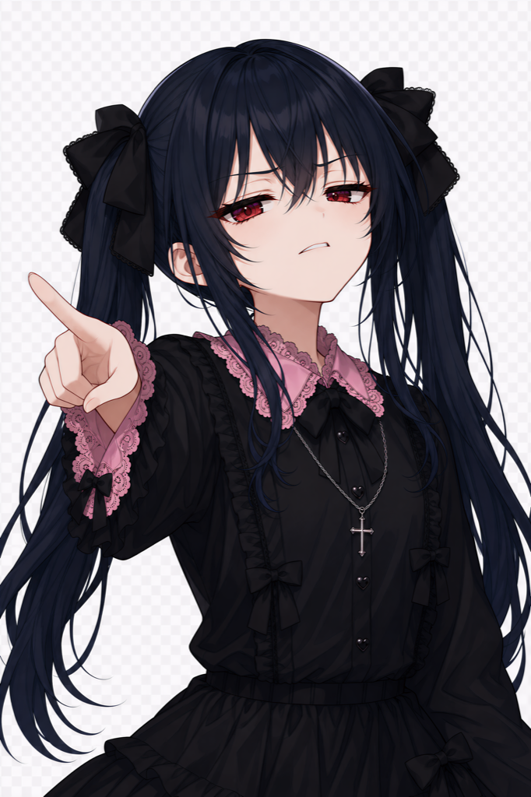
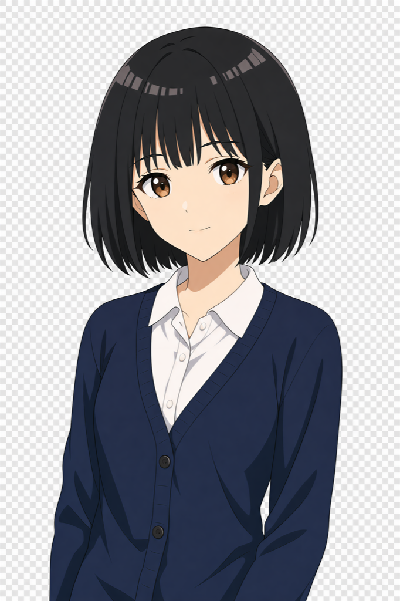
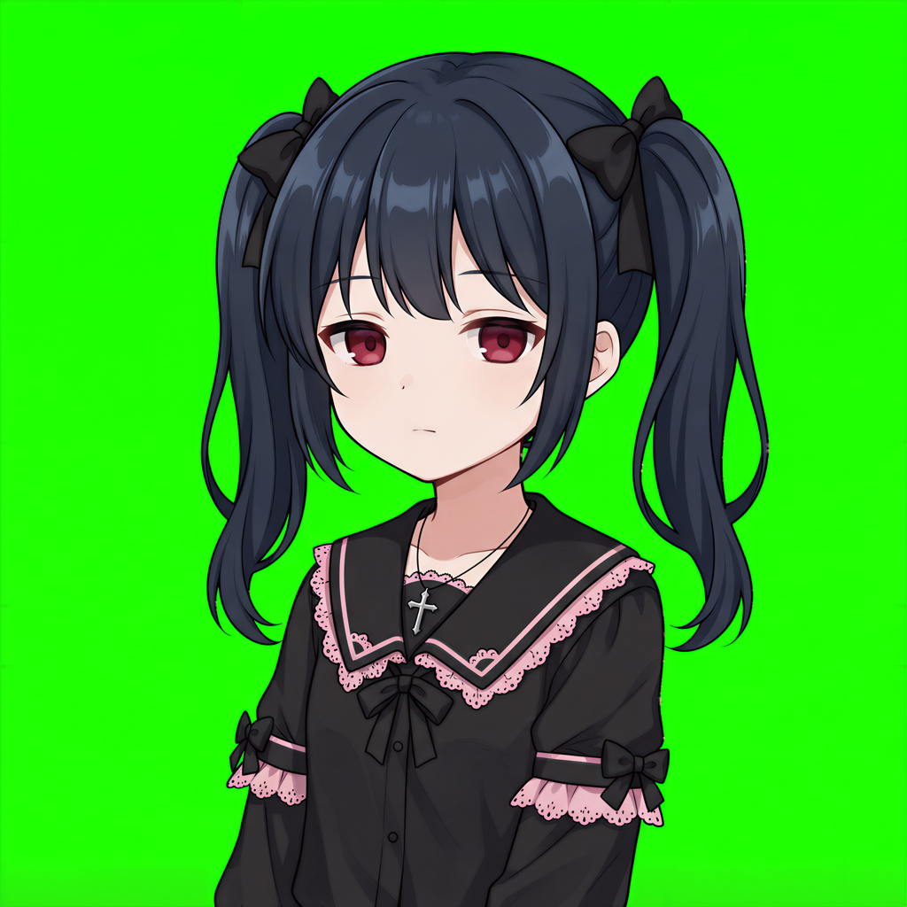
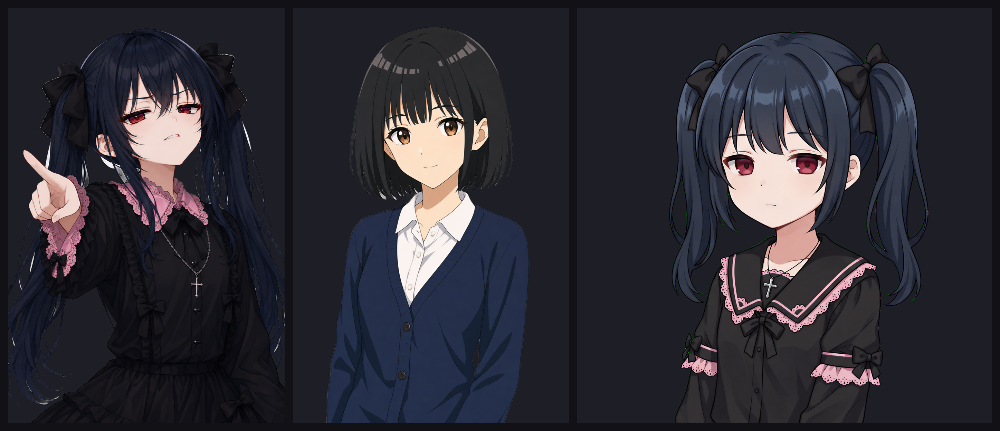
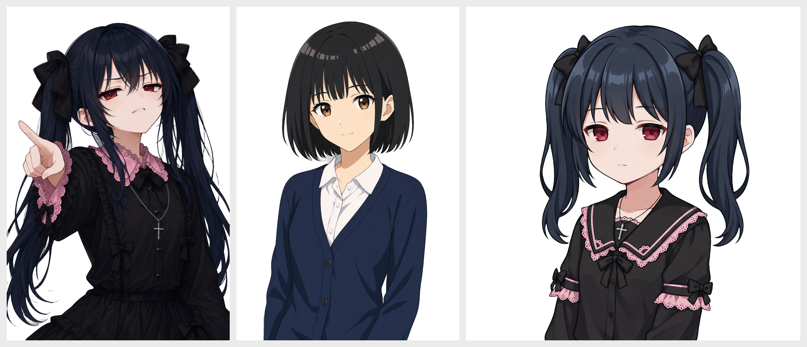
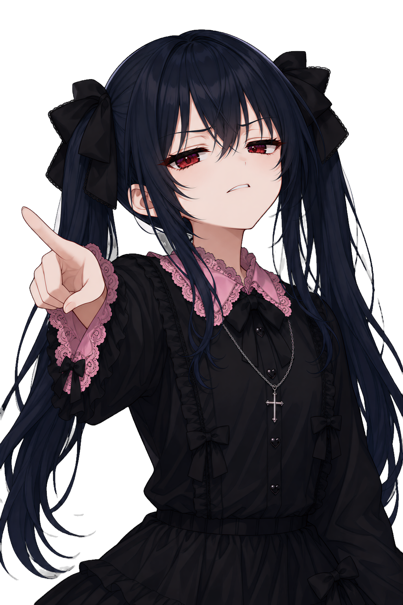
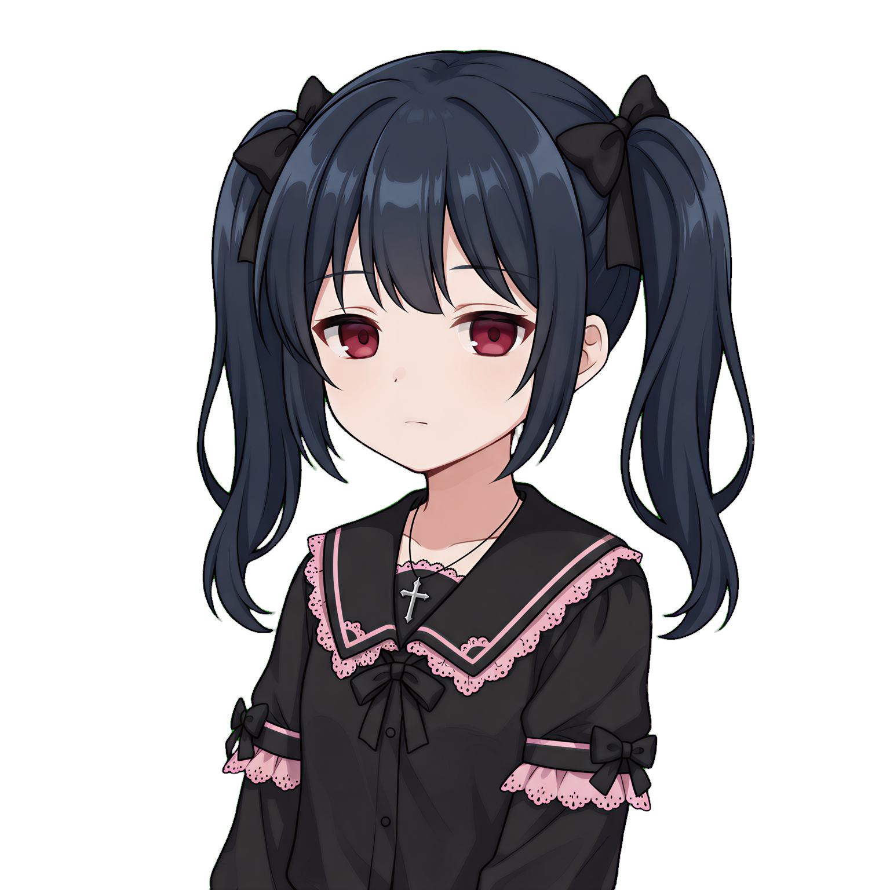
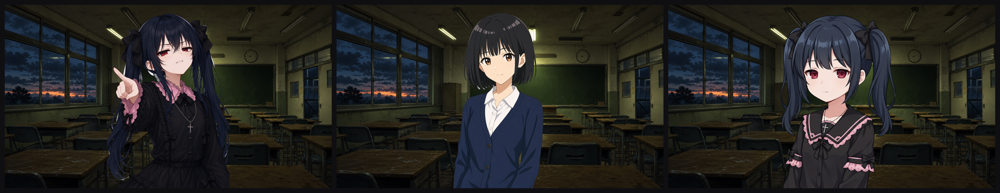
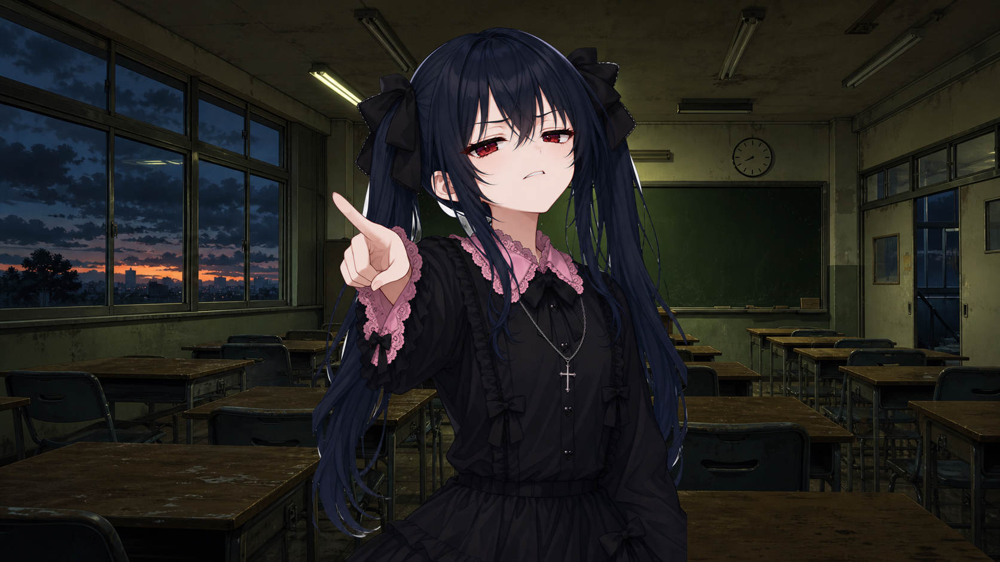
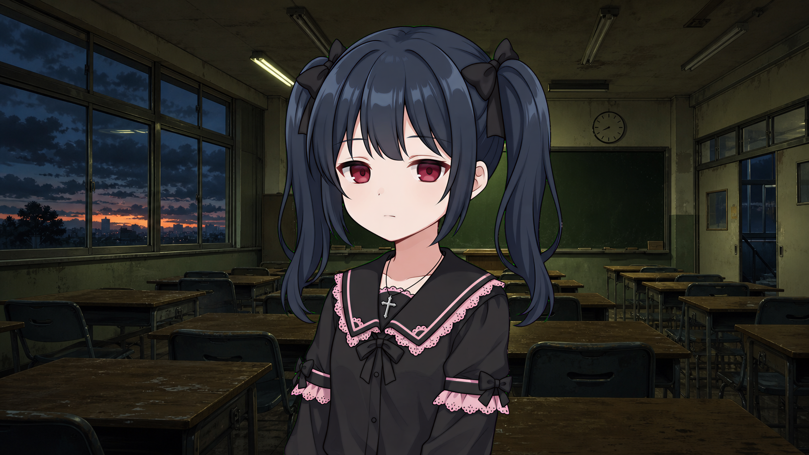

01測試背景與目的
動機:評估是否改用外部高解析度生圖工具(產出 6–8K 圖)取代現行 generate-tachie 的 gpt-image-2(1024),作為紅榴立繪的原圖來源。
核心問題:同一份 prompt 餵不同生圖工具,哪個產出的圖 (a) 正確理解角色設計語意、(b) 對我們的 rembg 去背流程最友善。
範圍:本輪只在 new/ 沙盒測試,不動正式的 hongliu/ 檔案。
02測試素材
| 檔案 | 尺寸 | 內容 | 原圖背景 |
|---|---|---|---|
h.png | 6689×10033 | 紅榴,動態指人 waist-up | 灰白棋盤格假透明 |
h2.png | 3344×5017 | demo(黑髮 bob)bust-up | 灰白棋盤格假透明 |
h3.png | 8192×8192 | 紅榴,neutral bust-up | 純綠幕 |



03測試方法 Pipeline
原圖 → 縮長邊 1536(sips -Z 1536)
→ rembg -m isnet-anime
→ alpha clamp(α≥120→255, α≤30→0)
→ ① 深底檢查合成 (30,30,38)
→ ② 白底檢查合成 (255,255,255) + 量化綠色溢色
→ ③ 場景合成:疊到 BG 驗證
縮到長邊 1536 的理由:立繪用不到 8K,超大圖 rembg 慢且不會更準。綠色溢色量化定義:半透明邊緣像素(30<α<255)中,滿足 g>r+18 且 g>b+18 的偏綠像素比例。
04量化結果
| 圖 | 前景像素 | 半透明邊緣 | 邊緣占前景 | 偏綠(green spill) |
|---|---|---|---|---|
| h | 1,114,250 | 17,746 | 1.6% | 0(0.0%) |
| h2 | 855,282 | 7,528 | 0.9% | 0(0.0%) |
| h3 | 1,059,244 | 11,523 | 1.1% | 9,495(82.4%) |
h3 的半透明邊緣有 82.4% 是綠色像素——這是綠幕方案的鐵證,h/h2(假透明)完全沒有。
05逐階段發現
① 深底檢查 (30,30,38)

- h:輪廓乾淨無白邊 halo,唯一殘留是左右飄散的淺色髮絲(畫在稿裡的筆觸,rembg 正確判為前景,後製無效)。
- h2:幾乎完美。
- h3:輪廓乾淨——但綠邊被深底藏住了(暗綠 vs 深灰低對比)。深底看不出 h3 的問題。
② 白底檢查 (255,255,255)



白底是 h3 的照妖鏡,深底是 h 的照妖鏡。
③「純白背景生圖最好」的釐清
white_h 是去背後才合成白底的檢查圖,h 的原圖背景是棋盤格假透明,不是白色。
純白不是通用最佳解:對深色角色(紅榴)尚可,但對淺髮/白衣角色,白底與白色邊緣低對比,rembg 會吃邊或留 halo(image matting 基本限制)。正解:中性、非飽和背景最友善 → 棋盤格假透明 ≈ 中性灰 > 純白 > 綠幕。
④ 場景合成(陰暗教室 classroom-horror)



06跨背景決定性測試
初步以陰暗教室合成時,h3 目測最乾淨,一度判定「h3 最好」。為驗證是否為場景僥倖,將 h 與 h3 同時合成到攝影棚白棚(平均亮度 200/255,最能暴露暗/綠邊)。


| 陰暗教室(深 BG) | 攝影棚白棚(亮 200/255) | |
|---|---|---|
| h3 綠邊 | 藏住 | 現形 |
| h 飄髮 | 現形 | 隱形 |
| 當場目視贏家 | h3 | h |
- h 飄髮 = 淺色,亮 BG 隱形 → 選場景可迴避
- h3 綠邊 = 82.4% 綠色像素烙進圖裡,亮 BG 必露 → 除非後製去綠,否則躲不掉
07核心洞見
洞見一:瑕疵類型 × 背景明暗 的對稱
| 瑕疵 | 白底 | 深底 / 深色 BG |
|---|---|---|
| 亮色(白邊、亮髮絲) | 隱形 | 現形 |
| 暗/綠色(green spill) | 現形 | 被藏 |
深色 BG 藏「暗/綠」瑕疵、暴露「亮」瑕疵;白色 BG 剛好相反。正確的合成迴避規則是「讓殘留邊疊在跟它顏色相近的區域」——比單向「別疊深色區」更完整。
洞見二:主變數 vs 次要變數
| 變數 | 誰控制 | h3 表現 | 性質 |
|---|---|---|---|
| 髮型結構(封閉/開放) | prompt | 開放 | 主變數,死局或通關 |
| 邊緣顏色(綠邊/白邊) | 背景指定 | 有綠邊 | 次要,可修 |
封閉輪廓是 rembg 唯一完全無解的死局(被框在裡面的背景像素,再強的後製都碰不到);綠邊只是邊緣瑕疵、可修。h3 髮型開放做得好,是它「效果好」的真正原因——而髮型開不開放,是 prompt 決定的。兩個變數都歸 prompt 管,所以綠邊不是「綠幕原罪」,是「prompt 沒把背景指定好」。
08Prompt 考古:綠邊的根源
調出紅榴實際用過的 hongliu_neutral.prompt.txt——h3 綠邊的根源白紙黑字寫在裡面:
...Solid bright green #00FF00 background, flat uniform color... Single character, clean lines, no text, no UI.
| 項目 | .prompt.txt(用的「之前 prompt」) | design.md Anchor(現行) | SKILL.md(源頭) |
|---|---|---|---|
| 背景指定 | #00FF00 綠幕 | 未指定 | transparent |
| 開放輪廓指示 | 完全沒有 | 有 | 有 |
| 髮際高光引導 | 無 | 無 | 有 |
| 無飄髮 / clean-cut | 無 | 無 | 有 |
.prompt.txt 是 7/1 的「化石」——要綠幕、沒有開放輪廓指示,沒跟上 SKILL.md 後來的硬化。用它測試等於用過時規則,難怪得到綠幕。SKILL.md 才是 source of truth,角色資料夾的舊 .prompt.txt 是會過時的存檔(所以也不該回頭改它,要生新的)。09方法論反思:肉眼為主,量化為輔
- 真正做判斷的自始至終是肉眼。發現綠邊、飄髮、選構圖,都是眼睛一看即知;量化(82.4%、亮度值)是事後把肉眼所見數字化,提供可追溯紀錄,不是判斷的來源。
- 肉眼唯一盲點:一次只能評估「當下擺在眼前的那張背景」。單看陰暗教室會誤判 h3 最好(綠邊被深 BG+綠黑板掩護)。破解法不是量化,是換背景再看——白棚一擺,肉眼一秒看穿。
- 量化不可取代的唯一場合:批次生成(數十張)無法逐張目視時,當自動篩選門檻。手動比少數幾張,肉眼即足夠。
10結論與建議
- 採用 會輸出假透明/棋盤格背景、且正確理解開放輪廓語意的生圖工具(h 來源)。
- 淘汰 輸出綠幕的工具(h3 來源)——除非能改成假透明輸出,否則綠邊債不值得多一道去綠工序。
待辦(非本報告範圍):
generate-tachieSKILL.md:Post-Process 補「雙底檢查」(現僅深底)。- 若確定換生圖來源:SKILL.md Step 2/3 定位從「呼叫 codex 生圖」調整為「管理外部高解析圖 + 去背」。
- 決定性岔路未定:繼續 gpt-image-2,還是改用外部高解析工具(需先確認它支不支援假透明輸出)。
11三方向規劃(未實作)
去背這件事依「圖的來源」分三個方向,對應 pipeline 三段:
| 方向 | 定位 | 狀態 |
|---|---|---|
| ① 角色設計 | 開放動作/髮型、避開封閉輪廓(通用、不綁角色)→ 讓角色天生好去背 | 待規劃 |
| ② 生成側 | 準備/生成立繪,控制中性背景 + 邊緣 anti-artifact | 待規劃 |
| ③ 帶圖去背 | 拿一張現成立繪,只做去背 + 事後製作 | 已規劃,plan-critic 打回 |
方向三 MVP(plan-critic 砍過後)
輸入動漫立繪 → 縮到長邊 1536 → rembg isnet-anime + alpha clamp → (使用者說是綠幕/純色才) 去污染 → 深底+白底雙預覽給肉眼看 → 輸出透明 PNG 無解情況(封閉輪廓/畫出來的飄髮)當場口頭講,不自動偵測
12產出檔案清單
保留
h.png/h2.png/h3.png— 外部生成原圖,供未來對照/重測(尚未進 git)TEST-REPORT.md— 初版(僅前 8 節);TEST-REPORT.html— 本完整報告compare_*.png/composite_*.png— 各階段比較圖report_assets/— 本 HTML 引用的全部圖(18 張,含跨背景證據on_photo_studio_*)
判斷依據為肉眼目視合成圖;結論、數據、對照關係已完整記錄於本報告。原圖 h.png/h3.png 各約 80MB。